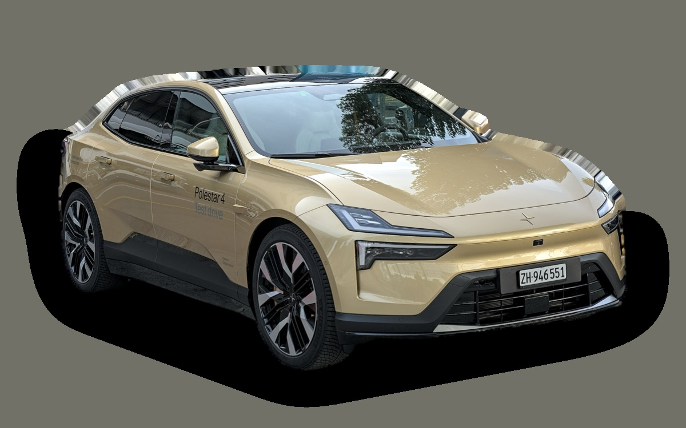
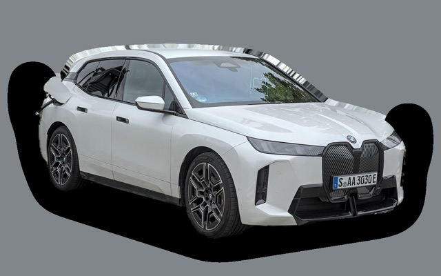
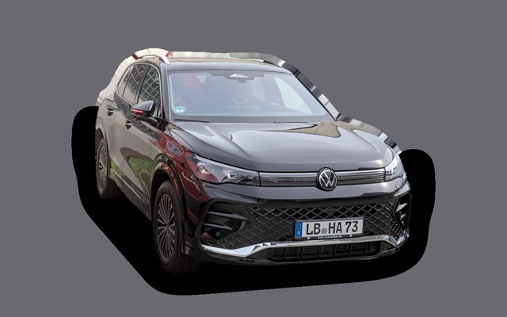
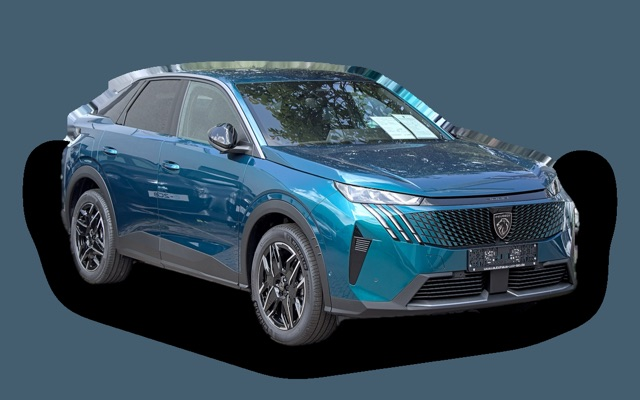

What does a Polestar 4 cost per month?
A 2026 Polestar 4 costs about SEK 6,261 a month, all in.


Monthly cost by model year
| Model year | Version in the calculation | Price | Per month | Grade |
|---|---|---|---|---|
| 2026 | Long Range Single Motor, Standard | SEK 639,100 | SEK 6,261 | C |
Based on 5 years of ownership and 12,500 km a year, with fuel prices from 2026-10-22. The monthly cost includes depreciation, fuel, servicing and repairs, insurance and road tax.
How the cost splits for a 2026 car
- Depreciation: SEK 4,624/mo
- Fuel: SEK 438/mo
- Servicing and repairs: SEK 254/mo
- Insurance: SEK 915/mo
- Road tax: SEK 30/mo
Lease or buy new?
Polestar Privatleasing offers the Polestar 4 Rear motor Business edition from SEK 6,995 a month for 36 months and 15,000 km a year. Here is what that costs compared with buying the same car new for SEK 639,100 and selling it after 36 months, at 12,500 km a year and 5 percent interest.
Leasing is cheaper SEK 799 less a month, SEK 28,764 over 36 months.
| Per month | Lease | Buy |
|---|---|---|
| Lease payment, 12,500 km a year | SEK 6,995 | – |
| Set-up and invoice fees | SEK 81 | – |
| Depreciation | – | SEK 5,634 |
| Interest on the money, 5% | – | SEK 2,240 |
| Servicing and repairs | SEK 223 | SEK 223 |
| Fuel | SEK 436 | SEK 436 |
| Insurance | SEK 959 | SEK 959 |
| Road tax | SEK 30 | SEK 30 |
| Total per month | SEK 8,724 | SEK 9,523 |
| Total over 36 months | SEK 314,064 | SEK 342,828 |
The offer is for 15,000 km a year. Driving less doesn't lower the payment. Polestar Privatleasing: Polestar 4 Rear motor Business edition, 36 months, 15,000 km a year, servicing not included, fixed payment. Set-up fee SEK 795 and invoice fee SEK 59 a month (estimated, the offer doesn't state them). Source: polestar.com, read on 26 October 2026, valid until 31 December 2026.
Buying: SEK 639,100 for a new car in the same version, and SEK 436,262 back when you sell it after 3 years. The residual value is based on ad prices for 3-year-old cars, adjusted because you drive 37,500 km in 3 years instead of the typical 42,000 km. The interest is what the money costs: interest on a car loan, or the interest you miss on savings. Fuel, insurance and tax are the same either way. Excess mileage and abnormal wear are charged when you hand back a leased car, and trading in a car you own at a dealer usually gets you less than the ad price.
Calculate with your own distance and interest · All lease cars compared
Used prices in ads
| Model year | Median price | Ads | Typical mileage |
|---|---|---|---|
| 2026 | SEK 624,900 | 49 | 10,000 km |
| 2025 | SEK 537,000 | 17 | 23,000 km |
| 2024 | SEK 574,900 | 22 | 28,000 km |
The median price in Swedish ads by model year in October 2026 (source: Blocket, AutoUncle). Ad prices are asking prices, and the final price may be lower.
Engines and versions
| Engine | Fuel | Power | 0–100 km/h | Consumption (WLTP) | Range | Model years | Extra cost |
|---|---|---|---|---|---|---|---|
| Long Range Single Motor | Electric | 272 hp | 7.1 s | 17.2 kWh/100 km | 610 km | 2024– | – |
| Long Range Dual Motor | Electric | 544 hp | 3.8 s | 18.8 kWh/100 km | 580 km | 2024– | +SEK 60,000 |
- Trim: Standard, Plus (+SEK 38,000)
Facts
- Body
- SUV
- Model years
- 2024–
- New from
- SEK 639,100
- Boot
- 526 litres
- Euro NCAP
- 5 of 5 stars
- New-car warranty
- 3 years
- Reliability
- 3 of 5
- Comprehensive insurance, estimate
- SEK 12,200/yr
- Servicing, estimate
- SEK 2,600/yr
Pros and cons
Pro
Roomy rear seat and long range.
Con
No rear window, so you look back through a camera.
Similar cars
 Lexus RXSEK 6,204/mo as a 2023 model
Lexus RXSEK 6,204/mo as a 2023 model
BMW iXSEK 6,331/mo as a 2023 model- Volvo XC90SEK 6,165/mo as a 2023 model

Volkswagen TiguanSEK 6,357/mo as a 2026 model Skoda KodiaqSEK 6,029/mo as a 2026 model
Skoda KodiaqSEK 6,029/mo as a 2026 model
Peugeot 3008SEK 5,980/mo as a 2026 model
Updated 2026-10-27 · ad data Oct 2026